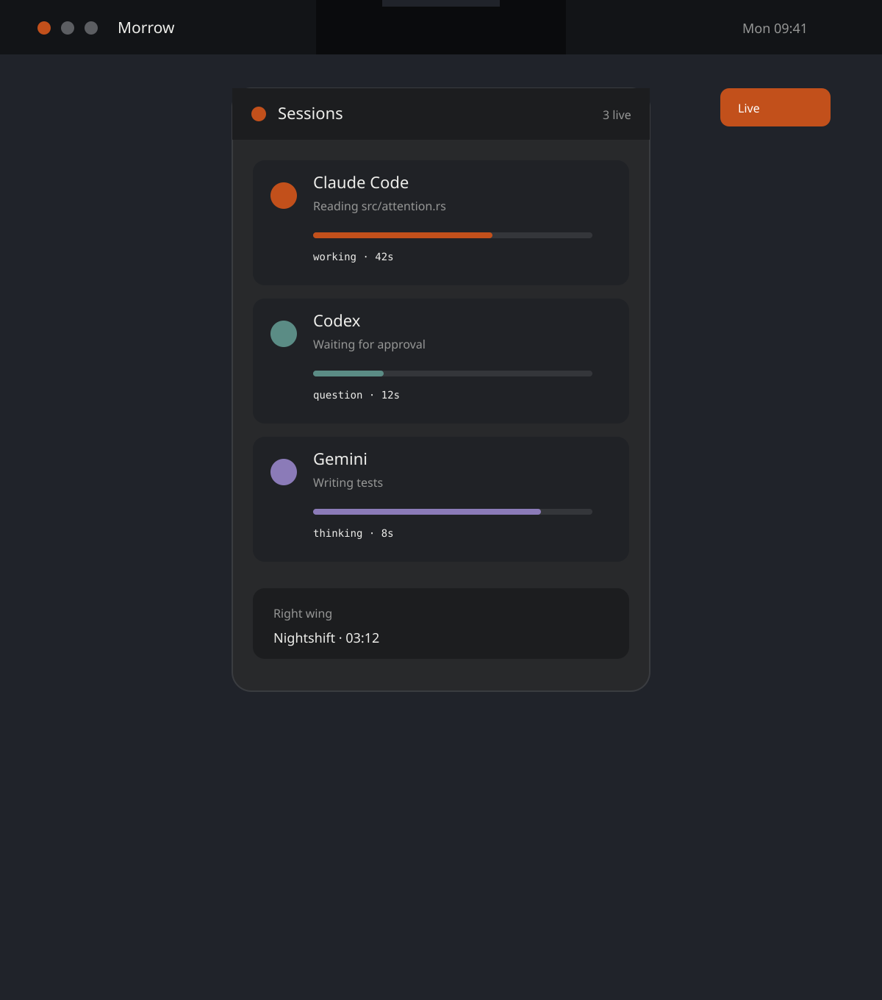
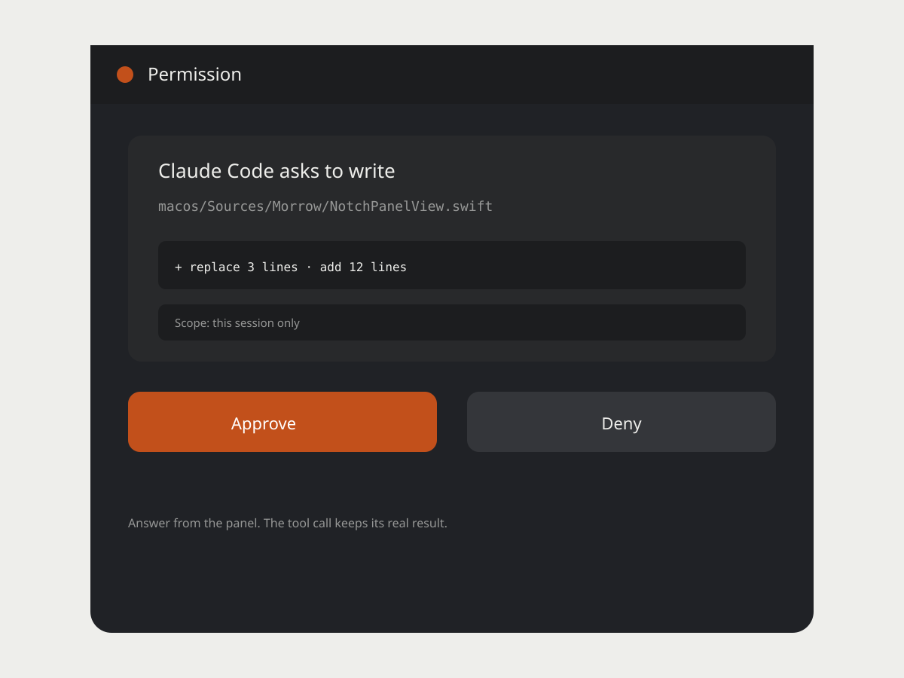
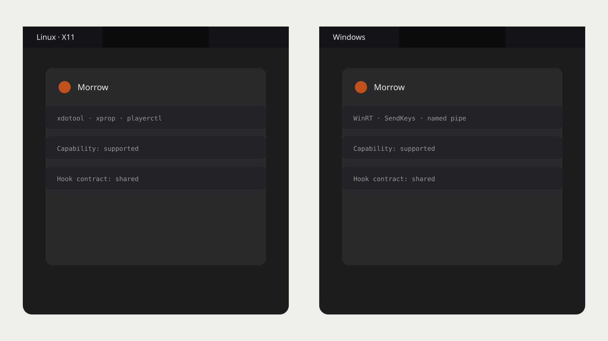

macOS · Linux · Windows
Notch panel for coding agents.
Morrow puts your coding agents in the notch. See Claude Code, Codex and Gemini work, approve prompts and follow playback from one panel.

3 sessions live · right wing tracks playback
The notch panel
One panel for the agent sessions you already run.
Session rows
Claude Code, Codex and Gemini sessions appear in the notch with their current status.
Approval card
Permission prompts land in the panel. Approve or deny there; the tool call keeps its real result.
Music wing
The right wing follows the current track with a progress line and lyrics.

Morrow on macOS, Linux, Windows.
The hook contract, fixtures and capability table are shared across every desktop. When an OS cannot do something, Morrow shows the reason instead of failing quietly.
